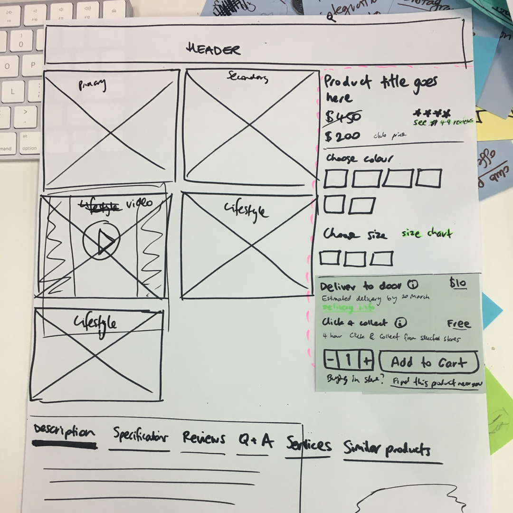
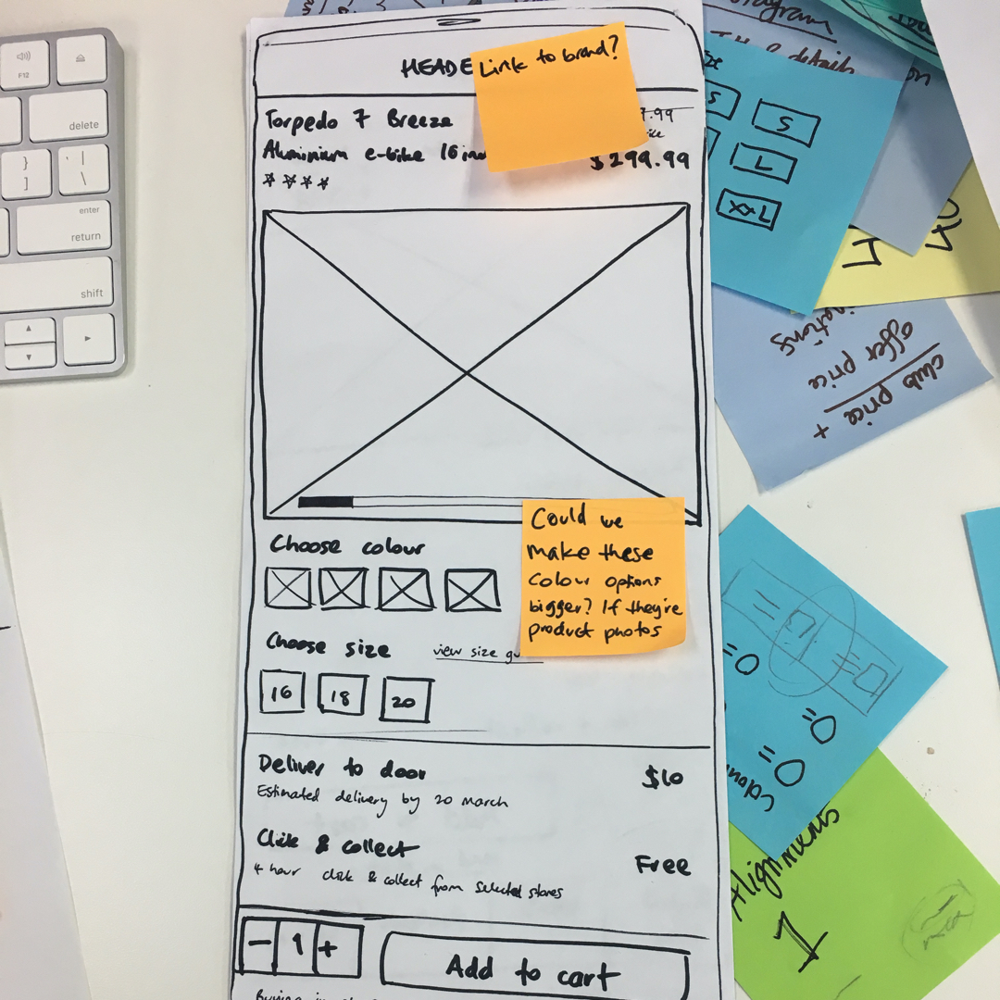
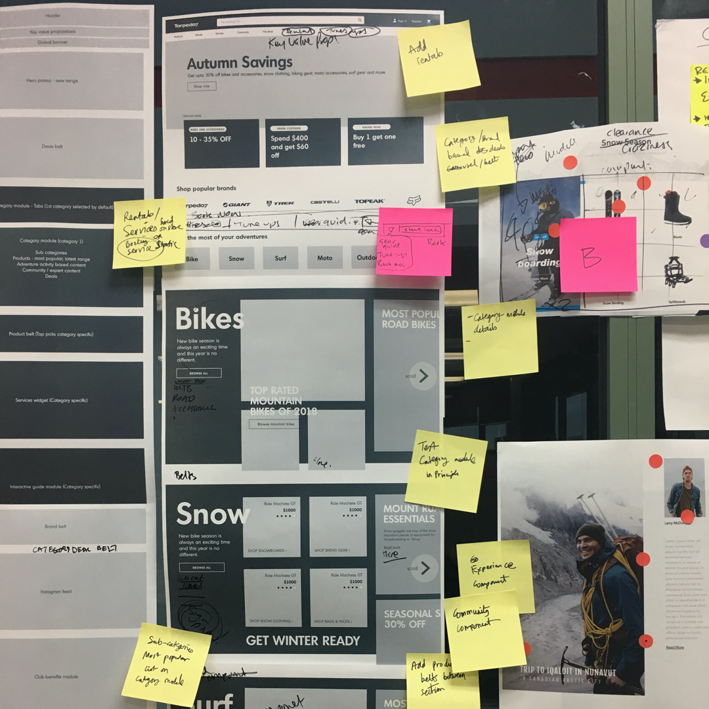

Design
Post discovery at the start of every sprint, we added granular tasks to be completed across the 2 weeks, helping us stay on track with the timelines. UI designer and I worked a sprint apart, with me focusing more on the discovery & design, and her focusing more on design & delivery although constantly collaborating throughout the process.
Ideation



